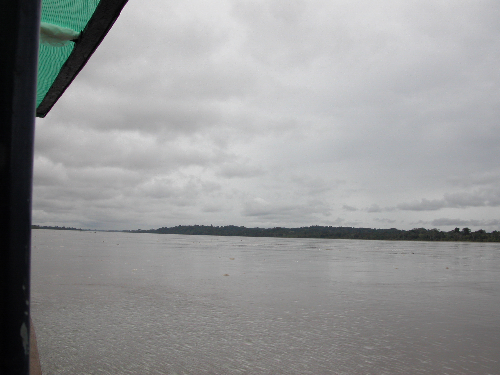

|
TOPICS My blog e-mail me | ESSAYS HEART OF TWILIGHT Back to Essays page |
July, 2004 I just returned to Connecticut from a two-week trip to Ecuador that included a couple of days in the Amazonian rain forest along the Napo River. The first leg of the trip was a New York-Miami-Quito flight, then overnight at a luxury hotel in Quito, and the next morning a half-hour plane ride to the small town of Coca where you meet a young American who works at the lodge and has come to shepherd you to your destination. You are given a tuna sandwich lunch and have time to walk a few blocks in what, to an American eye, is an impoverished, poorly maintained town that includes paved streets in need of repair and run-down stores with goods and services like toiletries, gas cookers with a design that looks decades old, and computer repairs. Later you learn that little Coca is an urban hub for people living or working along the Napo River, which runs far inland—well beyond where you're going—to join up eventually with the Amazon. You board a canopied riverboat with a large outboard motor for the two-hour journey downriver to the inlet nearest the rain forest lodge. All your luggage has been sealed in plastic bags to protect against river (or rain) spray and placed near the rear of the boat.  The Napo is hundreds of yards wide, and the local pilot maneuvers the outboard motor to follow channels that crisscross the river and you, the average tourist, can’t spot. The scenery soon becomes repetitive: turgid opaque water, the odd sandbank, along the banks lots of trees that for all you know from this distance are oaks, the occasional building or small grouping of buildings looking like shacks, here and there on the riverbank indigenous-looking adults or children, one small town. No animals are visible in or out of the water, though you can fantasize that a silhouette of toppled tree trunks on a sandbank is really the outline of a crocodile or has an outgrowth that is actually a monkey. With a little imagination you could be on a steamboat a hundred years and more back in time except for the tall communications tower in the one small town and the earth-moving vehicles being unloaded at what you later learn is an oil drilling site not visible from the river. When you dock, local workers moor the boat and load the sealed luggage into a large metal cart supported by an axle with two automobile tires and rickshaw handles. You hike for a mile and a half along a path that is sometimes dirt (or more realistically mud) but mostly board-walks 3 or 4 feet wide raised a foot or two above the ground to allow for frequent flooding. The wooden walkway, topped with a stiff plasticized netting to help you avoid slipping on the wet wood and falling into the mucky water, is bounded by a rickety-looking handrail (in the interests of education and local preservation, everything seems to be made of local materials) which you are warned not to touch lest some biting ant or other noxious local denizen trouble your progress. Behind you, a local worker pushes (pulls?—you don’t really pay attention at the time) the loaded luggage cart. The walkway ends at the arm of a lake over which you travel for 10 or 15 minutes in a dugout canoe to the lodge itself. The time it takes to reach this destination becomes part of your touchstone for the remoteness of your trek: 30 hours from your Manhattan apartment door. I came to this lodge because it seemed unlikely I would ever get a chance to be in a rain forest again. I was expecting to see local fauna, especially monkeys, up close. This doesn’t happen, and it takes me 24 hours of being bored by long hikes and distant glimpses of birds and animals to realize that the rain forest is captivating me in quite a different way. I have to take it on its own terms, not be disappointed by an unfulfilled preconception. In many ways the flora is more interesting than the fauna. We learn about broad lianas that twist around a huge tree and gradually blanket it until, after many years, they have blocked the tree from all solar or earth nutrients and effectively suffocate it. I begin to understand that each puddle is a temporary ecosystem that becomes extinct between rainfalls. We learn about primary and secondary growth: the first is fully developed forest with towering trees blocking out the sky so that it is easy to walk among them because little grows on the ground other than plant species adapted to minimal sunlight; the latter appears after a huge tree dies and tumbles to the forest floor, leaving behind a gash in the canopy that allows sunlight to reach the ground cover and support low, tangling growth in our Western image of dense jungle only negotiable via machete. We are exposed to skills of the indigenous Quechua (pronounced, I believe, Kichiwa) people, including a blowpipe double the length of a person, fashioned by tightly rolling broad leaves to produce a perfectly straight passage down its center. The darts are made with small nicks so that a monkey cannot pull them out before the narcotic effect of carefully gathered curare can anesthetize or kill the monkey, which then falls from the high branches to the ground where hunters can retrieve it. For its importance and ingenuity such local technology is surely no less inspired than the intricate inner workings of a Coke-dispensing machine in New York. The lodge, staffed with young and zealous Western (mostly American) guides—or rather “naturalists”— paired with local Quechua specialists, seeks to convey an image of a rudimentary, rugged place in the midst of a large, carefully protected chunk of the rain forest, a preserved and sprawling Eden segregated from a fallen modern world. But we also learn that the land was given or lent by one or more foreign oil companies that own hundreds of thousands of acres for exploitation and, to expand control, have gone so far as to bribe one band of local tribespeople to make war on another. The lodge owners are not local nature-guardians but entrepreneurial and absentee eco-Swiss. The lodge’s land is, in fact, a tiny portion of the vaster oil company holdings. The snake is not so much inside this garden as coiled in a surrounding boundary to foster the illusion of a relatively pristine pastoral paradise. In traveling from Quito to the lodge, we had in a sense gone backwards in time, from a (relatively) modern metropolis to forest living, from an urban population at least nominally independent (despite the obvious poverty of many residents) to people probably treated with only slightly greater respect than during the height of European colonialism. In this rain forest the wealth of a local family is measured by possession of a dozen or so cattle grazing on a few acres of land held in the family’s own name (as opposed to larger tracts of land shared by many families with no ownership but at the mercy of a tribal leader’s decisions on who will remain or be exiled) and a house on stilts with a roof of rusted corrugated metal salvaged from who knew where. The family shares its living quarters and food with some of its smaller livestock and pet local birds. On the wall are a few antique metal tools, including a rifle inherited from World War I. While my adult life has been in Western cities, I grew up on a small chicken farm in New Jersey; so I feel I understand something of the rural-urban division that still typifies Western society. But that experience is dwarfed by the kind of rural-urban chasm that must exist in Ecuador. Local forest and river people seem overwhelmingly dependent either on subsistence or near-subsistence farming on the one hand, working for Western concerns (like the Swiss-owned lodge and oil companies), surely at low wages, on the other. It turned out, in fact, that while the youthful American “naturalists” eat with their tourist charges, native guides are fed a much simpler diet in quarters physically separated from the tourist dining room. (When they have no tourists to manage, the American guides are kept on the same basic fare as the locals.) Both foreign and local guides live in rudimentary shelters. Or so I heard; my wanderings were shielded from ever seeing (or at least identifying) them. What gradually dawns on you is that you're in a theme park made possible by old-fashioned European colonialism. On the one hand, like Disneyland the lodge and its grounds provide a largely safe enclave that offers the illusion of adventure; on the other hand your visit is only possible thanks to large numbers of underpaid, smiling Indians performing the portage and housekeeping tasks for which you have paid big bucks back in the States. In the sad economic world of the Quechua, moreover, these are plum jobs, and the plummest seems to be supporting guide to the much younger American naturalists. You never learn actual wages, but you suspect that the Western guides are paid poorly by American standards but substantially more than their local assistants. I note this modern and recent experience as a reminder that when it comes to how countries and people treat each other, everything is a variation on a theme of power and control. We in the West who are comfortably off and more (in some cases to the extent that we can sign up for conscience-saving and excitement-aspiring eco-tours to rain forests) try not to think about how much our well-being comes at cost to people not so well off, whether poorer citizens in our own country, legal and “illegal” immigrants who compete for low-paying jobs, or people in the so-called third-world nations whom we never see but who pay the price directly or indirectly of what we proudly call Western civilization. (Reporter: “What do you think of Western civilization?” Gandhi: “I think it would be a good idea.”) Footnote When I decided several years ago to read about European behavior in what to Europeans was the New World, I inherited a sense that whatever went on—and I already knew there had been plenty of atrocities—was somehow born ex nihilo as a result of encountering the non-European strangeness of Western hemisphere peoples and environments. As my reading proceeded, I realized what should always be obvious but in our historical provincialism we tend to forget: nothing happens out of the blue. The history of colonialism (defined broadly as one people’s subjugation of another via direct or indirect governance) shows similar behaviors across time and culture. The early behavior of Europeans in the Americas reflects a long history of managing captive people, including by antique Rome, Arab slave traders, medieval Christian incursions into the Middle East, and more recently an extension of pre-Columbian encounters with technologically undeveloped people during penetration of the eastern Atlantic, the West African coast, the Indian Ocean and beyond. For the early post-Columbian decades it is primarily a history of how Spanish, Portuguese and Italians (especially Genoese) adapted old and new experience to gratify greed for imagined and real riches. Other European nations did not lag far behind. Aside from becoming conscious that Iberian behavior in the New World was an extension of pre-Colombian experience, I was also surprised to learn that in Spain (unlike, I suspect, later colonizing European nations in the 16th and 17th centuries) there was active legal and theological debate about acceptable ways of treating newly found people and their intrinsically heathen cultures. In Spanish New World colonies themselves, these debates did not count for much, since the bulk of European populations were far away, logistically difficult to govern, and typically dismissive of distant edicts that differed from their on-the-ground desires and experience. Still, it is intriguing that the debates went on at all and that even in Spanish America occasional voices questioned the most heavy-handed colonial techniques. | |